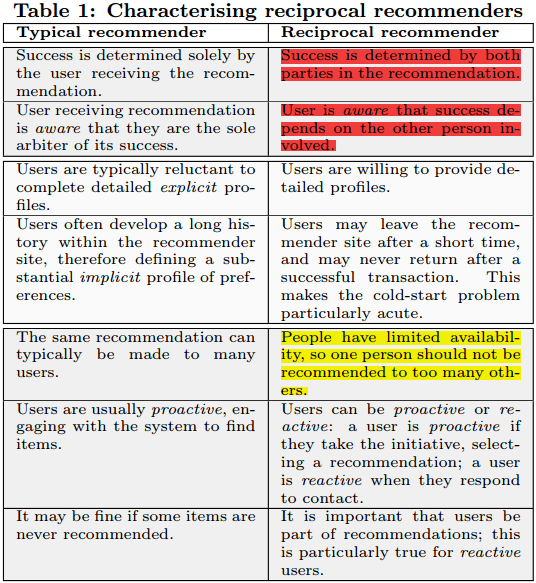
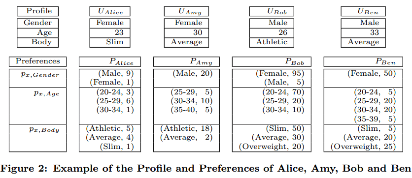
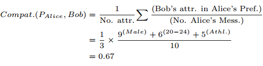
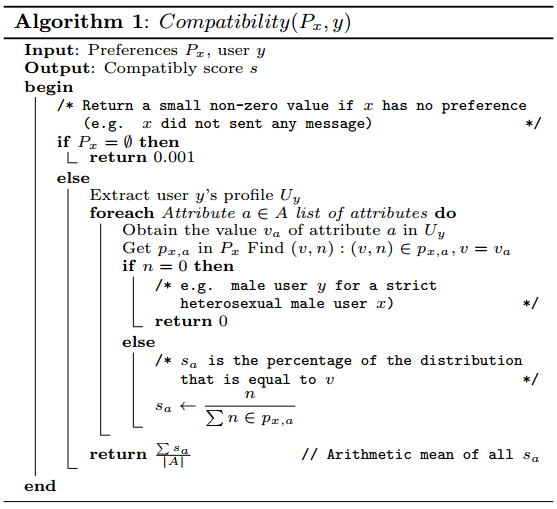
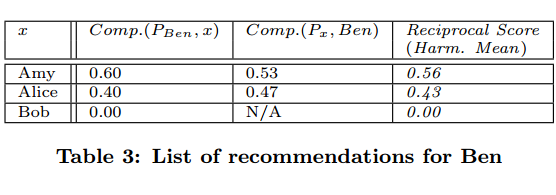
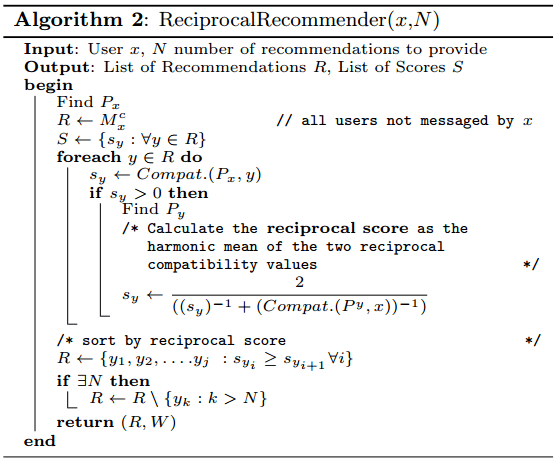
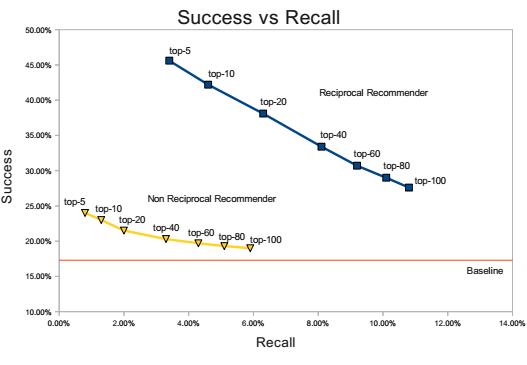
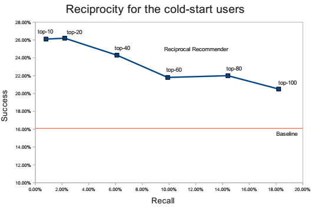

0. 概述
1) “双向推荐器”用在双方互为主体和客体的推荐中（职位推荐、导师学生推荐等）。
2) 作者的工作：认识和定义“双向推荐”的性质。
3) 作者使用澳洲一个大交友网站来测试RECON的预测能力，发现RECON把“top ten”的成功率从23%提高到42%；同时也改善了冷启动的问题（新用户的“top ten”成功率达到26%）。
4) 作者还讨论了这些测试结果的意义。
1. 介绍
1) 存在很多双向推荐的场景。
2) 用一个表格来反应传统推荐和双向推荐的区别：

3) 匹配标准包括直接用户信息explicit profiles（用户提供的自身信息和喜好）和间接用户信息implicit profiles（系统通过监测用户行为得到的信息）。
4) 有可能一种坏的可能：用户在得到好的推荐后就隐退了，这对推荐器会造成不好的影响。（不同于电影推荐器，推荐器越强回访量越大）
5) 需要解决Implicit profiles冷启动的问题。
6) 还要解决负载增大的问题，以及单用户推荐量的问题（单个用户受到太多推荐的话会同时影响该用户与相关联用户的体验）。
7) “主动用户”会给推荐器带来正面影响，“被动用户”太多则会带来不良影响。
8) 作者的工作：a.设计对照组实验来比较双向推荐和非双向推荐，以探索和找到建立双向推荐器的方法。b.设计对照组实验，通过对比来评估双向推荐的能力。
9) RECON的算法步骤：a.找出用户喜好;b.计算评估分数;c.产生评级列表。
2. 相关工作
1) Beehive社交项目用基于内容和基于协同过滤两种算法来做实验，发现基于内容的推荐在双方之前并不认识的情况下效果最好，而基于协同过滤的推荐在双方之前就已经认识的情况下效果良好。
2) 遇到的问题：用户信息中存在的不可靠性。报告显示用户通常不愿提供直接用户信息而更倾向于享受间接用户信息带来的反馈。
3) 冷启动问题的处理可惠及两类人：新加入的人和被动的人。
4) 人口统计学信息是另一个可以衡量人与人之间相似性的工具。
3. RECON的算法
1) 作者认为积极对话的用户之间的对话内容中包含了有关用户喜好的重要信息。通过分析这些信息的特征来找出用户的喜好偏向（间接用户信息）。
2) 第一步：找出用户x的喜好
Ux：用户x（提出的）属性的值的集合。（单个属性用a来表示，单个属性值用va来表示）
Mx：收到过用户x的消息的用户的集合。（单个用户用m来表示）
px,a：一个通过“属性a的每个取值(或取值范围)v及其在Mx用户群中出现的次数n，即(v,n)”来衡量用户x对该值v的喜好程度的参数。
Px：用户x所有px,a的集合，即用户x（提出的）所有属性a的px,a值的集合。

3) 第二步：计算匹配值
原理就是用一个用户x的Px去匹配另一个用户y得到匹配值Compat(Px,Y)。


4) 第三步：画出双向推荐表
主要就是用户x对于用户y的匹配值和用户y对于用户x的匹配值，还有reciprocalscore，这三者对top-N的决策作用。


5) RECON的实现
RECON的实现稍微有别于上述两个算法。
a. 实际环境下数据量巨大，作者通过给属性值设置范围的方法来筛选用户，此时势必会过不小心滤掉一些可能匹配的用户，但作者证明这种“失误”造成影响远小于它在运算速度上带来的好处。
b. 冷启动问题。在用户x交流次数为0的情况下，RECON会用各个用户y去匹配x，即Compat(Py,X)，去了解“谁会喜欢x”这个问题，进而推荐给x。
另外，在这种冷启动问题处理方式中，同样也采取了a中的措施。但这就需要x有一定的喜好信息，作者是这样处理的：利用另外一个与x性别或年龄大致相同的用户w的喜好信息。（作者把年龄相近的x与w划分到了同一个“组”中，因为作者认为这两人应该会有相近的喜好）
c. 如果还要进一步筛选数据，作者的办法是去掉一些不重要的属性。
但是要如何选择要保留的属性呢？作者的办法是统计与该用户交流过的用户中共性最强的属性。
4. 评估
1) 评估了两点：双向性的概念发挥的作用、冷启动问题。
2) 定义了两个参数：
Success(x,R)：推荐表中，给用户x回信且同意交流的用户数占给用户x回信的用户数（作者在这里没有明说，但字里行间默认了“所有交流都会有回复，只是存在同意交流还是不同意交流的区别”）的比例。
Recall(x,R)：给用户x回信且同意交流的这些用户中，存在于推荐表里的数目占总数目（即在推荐表里的+不在推荐表里的）的比例。
3) 设置了对照组，对比了双向推荐系统、非双向推荐系统和无推荐系统的Success值和Recall值。

4) 作者发现的仍存在的问题：新加入的用户在成功率上还是会稍微比老用户低。（对比上下两图的两条蓝线）

5) 测试硬件配置：
双核2GRAM（计算了9万个用户的140万条信息）
步骤二用时10min；步骤三用时2hr（平均每个用户收到了550个推荐）。
5. 结论总结
1) 双向推荐系统当前受关注程度不大。
2) RECON是基于在线交友网站建立的一个双向推荐系统。
3) RECON的测试使用了大量交友数据，作者评估了它的推荐效果并与非双向推荐器和无推荐对照组作了对比，对比结果显示了双向推荐拥有巨大优势。
4) RECON还处理了双向推荐中冷启动的问题。
5) RECON在top5的推荐中比已有推荐系统提高了2.6倍的成功率。
6) RECON也存在问题，它使用的是历史信息，下一步作者希望能进行实时推荐。
7) 作者也希望在控制计算量过载的前提下，保证被推荐的用户会很好的响应（利用好）这种推荐，以使推荐器良好地运转。（因为在这种推荐器下，受欢迎的人会越来越受欢迎）
8) RECON的这种推荐系统并不完全适用于其它领域，例如导师-学生推荐、雇员-雇主推荐甚至于社交网络中朋友的发现。因为这些场景下角色的对称程度就不那么高了，例如有些系统中是雇员找雇主，而有些则是雇主找雇员。这些多样化的情景下的推荐还需要先进一步完善推荐系统。